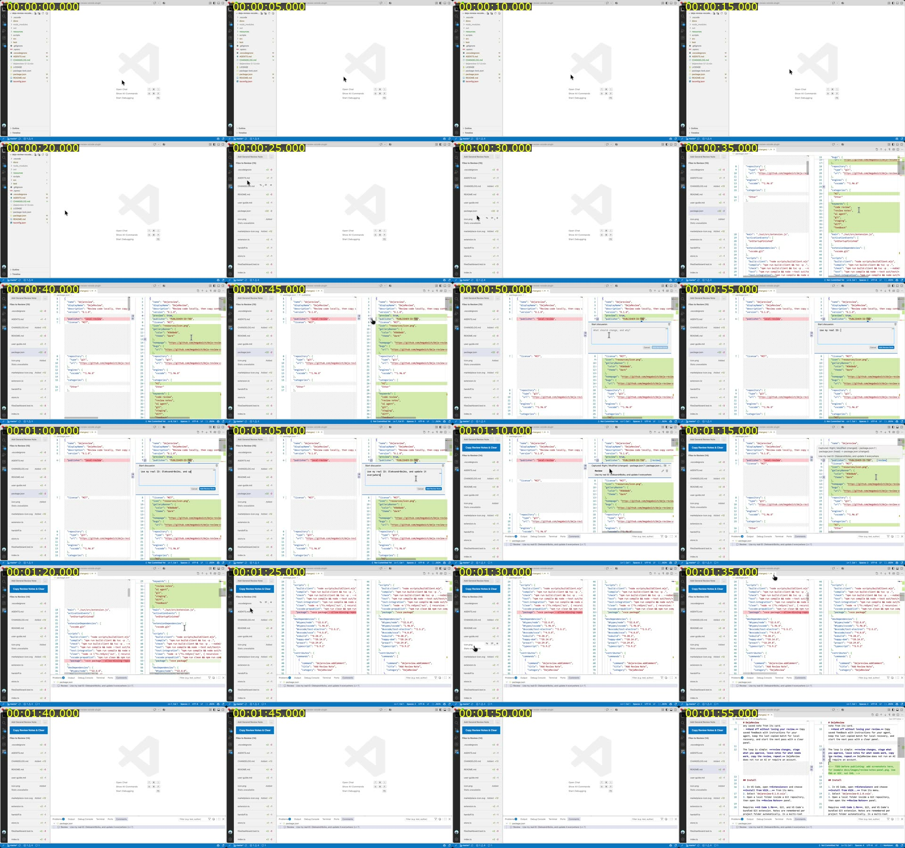

Making a narrated demo video with an AI agent
When I was publishing DejaReview to the VS Code Marketplace, I wanted a short demo video for it, and also a GIF for the Marketplace page. I never made such videos before, and editing a video by hand, with all the cutting, subtitles and "so yeah" and "basically" from my live talking, did not look very attractive.
So I asked an AI agent to do all of it: transcribe my voice, decide what to cut, rewrite my narration into clean sentences, generate a new voice, burn in subtitles and render the final video. All the video tools ran locally on my Mac and were free. A 9 minutes recording became a 4 minutes video, and it took about 45 minutes after the recording was finished.
In this article I want to describe how it went, which tools were used, and what I learned.
Here is the result:
All of it happened on October 29, 2026, in one OpenCode session with the Claude Opus 5.5 model.
Real work as a demo
I did not want to make fake changes just for the demo, so the video shows a real task: the last preparations for the Marketplace release. The notes in the video are real too: use my real publisher ID everywhere, replace a TODO in the README with a demo GIF, and add a link to Github issues to the changelog. And the agent which works on them at the end of the video made real changes, which went into the published version.
Shooting script
Then I asked the agent for a shooting script. For each scene it had what to do, what to say and the exact text to type into notes, with file names and line numbers.
I recorded my screen with the standard macOS recorder, talking while clicking. The script was planned for about 3 minutes, but the recording took 9 minutes and 6 seconds. I did not follow the script exactly: I showed some extra things which were not planned, waited for the agent, moved the mouse around a lot and opened some menus for no reason.
The plan
Then I asked if it is possible to extract my voice, make subtitles, cut long and repetitive parts, and replace my voice with an AI generated one. The agent proposed this:
- Extract the voice track with ffmpeg.
- Transcribe it to text with timestamps with Whisper.
- Decide what to cut and what to speed up.
- Rewrite the narration into clean sentences.
- Generate a new voice from this text.
- Render the video with burned-in subtitles and the new voice.
For the voice there were several options: local free models like Kokoro or Piper, OpenAI text-to-speech (cheap, and only the text is sent), ElevenLabs with a clone of my own voice (paid, and a sample of my voice has to be uploaded), and the built-in macOS say command. The agent also mentioned Descript, an app which does all of it, but it is paid and uploads the video to its cloud.
I chose the easiest option to start with, Kokoro. I don't know much about the differences between all these voices, so there was a good chance that the first approach would be good enough. And in such tasks you usually want to try them all and compare anyway, so the voice can still be regenerated later.
Tools setup
First of all, ffmpeg from Homebrew can't burn in subtitles, because it is built without libass, the library for drawing subtitles. So the agent installed ffmpeg-full, a separate Homebrew package with everything included. Installing it upgraded a shared library for H.265 encoding, and the regular ffmpeg stopped working with "Library not loaded". The agent noticed it and fixed it with brew upgrade ffmpeg.
The Python tools went into a separate environment, created by uv with Python 3.12, because the system Python on my Mac is 3.9.
Transcribing
For speech recognition the agent used mlx-whisper, a version of OpenAI Whisper for Apple Silicon, with the whisper-large-v3-turbo model. It transcribed 9 minutes of audio in about a minute.
The quality was good, but with some funny mistakes. Here is a raw piece:
0:34 if I start with Packages on, I see
0:50 so I can now lift for agent the node use my real ID and update it everywhere
1:06 and that's basically node I add the node so now you can see it's appeared here
"Note" was "node" almost every time, package.json became "Packages on", docs/images became "doximages", and "the review panel" became "Azure View Panel". And where I was silently typing, Whisper wrote "that's it" again and again, about 40 times, together with a lot of empty lines. This is a known problem of Whisper with silence.
Before going further I asked to see the transcript. The agent showed it grouped by topic, with its guesses of what I actually meant, and noted silent parts, unclear sentences and extra things which were not in the script. Later the agent also tried to give Whisper a hint with product words. It fixed "package.json", but "note" still stayed "node".
How an AI agent watches a video
This was the most interesting part for me. The agent can't watch a video, but it can look at images. So it made contact sheets: one frame every 5 seconds with a timestamp, 24 frames in one image. Here is the first one, the first two minutes of my recording:

Already from this sheet it is visible that the first 20 seconds are an empty editor, and around 1:40 again nothing happens. For the busy parts the agent made more detailed sheets with one frame per second. Also it wrote a small script which counts changed pixels between frames, to find stretches where nothing happens on the screen.
Edit plan and narration
Then the agent wrote an edit plan: 23 lines of narration, each one tied to a range of the recording with a speed. The narration kept my meaning, but in normal sentences. For example, my "so I can now lift for agent the node use my real ID and update it everywhere" became:
So I leave a note for the agent: use my real ID, OleksandrBoiko, and update it everywhere.
AI voice
For the voice the agent used Kokoro, a small open text-to-speech model with 82 million parameters, through the kokoro-onnx package. The model file is about 310 MB and the voices are 27 MB more. It is free and works offline.
The agent generated the same sentence with several voices: three male voices (American Michael and Adam, British George), a female voice Heart, and the built-in macOS voice for comparison. I liked Michael, but asked him to talk about 30% faster, so the speed was set to 1.3.
Some words needed help with pronunciation. So there is a small map of replacements, which is applied only to the text for the voice, while subtitles keep the normal spelling:
"spoken": {
"DejaReview": "Deja Review",
"package.json": "package dot JSON",
"AGENTS.md": "agents dot M D",
"VS Code": "V S Code"
}
First draft
The first render was 5:32 long with a lot of silence, because the faster voice was shorter than the clips under it. So the agent sped up each clip to the length of its narration: typing 4 to 7 times, staging about 6 times, the agent's work about 7 times. The result was 3:12.
While checking frames, the agent also found that subtitles on a semi-transparent background were hard to read over code, and changed them to white text on an almost opaque dark box.
The draft was ready about 25 minutes after I asked about editing, and it was actually already quite good. But at high speed all my mouse wandering and toggling menus back and forth looked frantic, and did not show anything useful.
Cut, don't speed up
So I asked to cut such pieces instead. The agent went through the busy parts second by second and kept only moments where something really happens. Now each narration line plays over one to six short pieces of footage, 48 pieces in total, and everything between them is cut: pauses, hovering over the file list, a menu opened by accident, searching in the Source Control view, a microphone permission popup and most of the agent's working time.
The speeds also became much calmer:
- Real actions are at normal speed: clicking
+, a note appearing, a file leaving the list, the notification after copying. - Typing is 3 to 5 times faster.
- Staging and pasting are 1.5 times faster.
- Checking the agent's results is 1.25 times faster.
The video is never slower than real time. If the voice is longer than its footage, the last frame just stays on the screen until the sentence ends.
Here is how one narration line looks in the edit plan, with three pieces of the original recording and their speeds:
{"text": "So I leave a note for the agent: use my real ID, OleksandrBoiko, and update it everywhere.",
"parts": [["0:47", "0:50", 1], ["0:50", "1:08", 3], ["1:08", "1:10", 1]]}
The agent also rewrote some narration to match what is really on the screen. For example, in the script I planned to stage AGENTS.md, but in the video I staged .vscodeignore, so the text was changed. And it fixed subtitles which were split badly, like "...back in Files to" and "Review." on two separate lines.
The second version is 4:03. It is longer than the first draft, but much easier to watch, and this is the one on YouTube.
Where to put a video
Then a few smaller things came up.
On Github a video in a README can be uploaded only up to 10 MB on free plans, and mine was 19 MB. The agent explained that H.264 is still the best codec for compatibility, because newer codecs don't play in some browsers, and made a two-pass encode tuned for screen content. It was 8.7 MB, without visible difference in the code text.
The VS Code Marketplace can't show videos at all, so for the extension page the agent made a 20 seconds GIF with three numbered steps: leave a note, stage, copy. There was a funny bug: the first GIF was 27 MB, because one piece of it was 5 minutes long instead of 6 seconds. ffmpeg inside a shell loop was reading from the standard input and swallowed the list of pieces. The fix was the -nostdin flag.
For this blog Github is not an option, because its videos are not meant to be embedded on other websites, so the video went to YouTube. The agent prepared a version without burned-in subtitles and a separate subtitles file, but in the end YouTube's automatic captions were good enough, so I did not bother.
The next day I noticed that YouTube played the video in 240p by default, even in full screen with a fast connection. 720p was there and looked good, but only when chosen manually. The recording is 874 pixels high, so YouTube made qualities only up to 720p, and in an odd mix: some of them only in H.264 and some only in AV1. "Stats for nerds" showed that the player aimed for 360p, but my browser plays AV1, which had no 360p, so it fell down to 240p. The solution was to scale the video up to 2560×1600 (1440p) with ffmpeg and upload it again. Scaling up does not add any detail, but YouTube seems to treat high resolution uploads differently: the new video got every quality from 144p to 1440p, and now plays in 1080p by default and looks much better. The only downside was a new video ID, so I deleted the old video and updated the links.
A skill for the next time
At the end I asked the agent to turn everything it learned into an OpenCode skill: a set of instructions, scripts and lessons, which the agent loads automatically when I ask for a video next time. It has scripts for setup, transcription, contact sheets, voice samples and rendering from an edit plan, and a file with lessons, for example to cut fuss instead of speeding it up, and not to put subtitles on a semi-transparent background over code. The agent tested all the scripts on a short clip and found two more bugs in its own code.
Lessons learned
- Use a real task for the demo. Then the video, the GIF and the release preparation are the same work, and the changes made by the agent in the video are in the published extension.
- While recording, avoid unnecessary mouse moves, scrolls, clicks and fidgeting with the UI. Move the mouse smoothly, and when you are thinking or waiting for something, just keep the screen still. Then all these delays can be easily cut out or sped up without any fuss.
- Speeding up boring parts is not enough, they should be cut. A longer video without fuss looks better than a shorter and faster one.
- An AI agent can't watch a video, but grids of frames and pixel statistics are enough for it to find cut points with one second precision.
- Local tools are good enough. Whisper transcribed 9 minutes in about a minute, and the Kokoro voice is free and works offline. The video itself was not uploaded anywhere, only the transcript and frame images went to the AI model.
- Whisper mishears product words, and a hint does not fix all of them ("note" still stayed "node"). So it is worth reading the transcript before editing.
- The agent can't listen to its own video. It checked everything with frames, and every time it honestly said that I should watch the result with sound myself.
- For YouTube, upload a screen recording scaled up to 1440p, even if the original is smaller. Otherwise YouTube may play it in 240p by default, see the end of "Where to put a video".
From the first message about the video to the accepted second version it took about an hour and a half, including the script and the recording.
P.S. This article was generated by AI from the history of that session, and then reviewed and edited by me, of course with DejaReview.